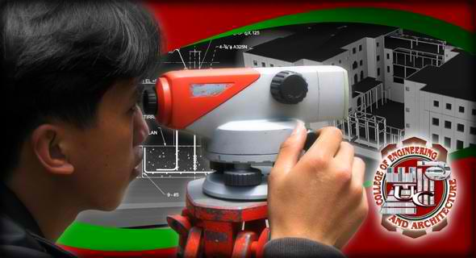

COLLEGE OF ARCHITECTURE AND ENGINEERING
The college aims to contribute a valuable share in the country's physical development, in the modernization of its infrastructures, and in improving the material comforts of man. Its contribution to nation building assumes visible form and directly affects regional landscapes. The Engineering & Architecture disciplines cover such an expansive area that comprehensive training in these professions encompasses liberal education as well.
History
The University of the Cordilleras was the first higher educational institution in Baguio City after World War II. Founded as Baguio Colleges Foundation by Atty. Benjamin Romero Salvosa in 1946, UC has earned its place among the institutions of higher learning that has touched and transformed the lives of thousands of young people of the Cordilleras including nearby regions.
Through the decades, the College of Engineering & Architecture has shared in effecting that transformation.
In 1949, Bachelor of Science in Civil Engineering, UC's first engineering program, was offered, creating the College of Engineering, with retired Colonel Juanito Ferrer as its first dean. Subsequent deans were Eliseo Rio, a retired colonel; the late Eustacio Baclig, then manager of Ports Authority; Mapagtapat Ongchangco, also a retired colonel and former Dean of the Corps of Professors in the Philippine Military Academy; the late Rosende Silvestre;
Dean Emeritus Avelino Cruz , a former deputy Base Civil Engineer and Chief of Planning and Environmental Engineering Section of John Hay Air Base, U. S. Air Force, in Baguio City; Engr. Enrico R. Garcia, BSCE,MSCE; and Engr. Aloysius C. Mapalo, BSCE,MSCE. Currently, CEA is under the oversight of Engr. Benhur B. Quesada, BSCE,MSCE.
In the mid-seventies, Architectural Drafting and Associate in Geodetic Engineering were offered.
Subsequently the full program Bachelor of Science in Architecture (BSAR) was offered in 1979.
The full program Bachelor of Science in Geodetic Engineering (BSGE) was opened in 1994.
Similarly in 1994, the Bachelor of Science in Environmental and Sanitary Engineering (BSEnSE) was initiated. The first batch of graduates in this program yielded a 100 % passing rate in the SE licensure exams capped with two topnotchers. In the ensuing years, it would maintain the same level of high standards so that in the year 2000, the program was recognized by the Commission on Higher Education and conferred it with the "Center of Development" award. UC was later recognized by the Professional Regulation Commission, Board of Sanitary Engineering, as the top performing school in the 2005 Sanitary Board Exams. More recently, it was recognized as among the top performing schools in the 2007 licensure examinations.
In coordination with the Graduate School, the program Master of Science in Civil Engineering (MSCE) was offered in 1999. The program, the first in Northern Luzon, became possible with the efforts of Dr. Ricardo P. Pama, current UC president, who himself is a civil engineer with a doctorate degree in engineering from Scotland, United Kingdom.
Starting in 2009, MSCE was implemented by CEA as an online course, the only engineering graduate program of its kind north of Manila to date.
Bachelor of Science in Computer Engineering (BSCpE) was introduced in 2000.
A year later in 2001, the program Bachelor of Science in Electronics and Communications Engineering (BSECE) accepted its first enrolees
In 2002, Master of Science in Mountain Engineering, was offered as a consortium program with Saint Louis University and Benguet State University.
Living up to its commitment, CEA has 55 topnotchers in the Licensure Examinations to date:
19 topnotchers in Sanitary Engineering including two 1st placers in a single year in 2008;
16 topnotchers in Civil Engineering including a record of four board placers in a single exam in May 2006
Engr. Maximo Sangdaan was CEA's first topnotcher when he placed 2nd in the CE board exam in 1960.
o 11 topnotchers in Geodetic Engineering
o 7 topnotchers in Architecture
o An 8th placer in Electronics Engineering
From the results of various licensure examinations for engineering and architecture programs from 1994-1998, the Professional Regulation Commission has rated CEA among the top ten best performing college in its class.